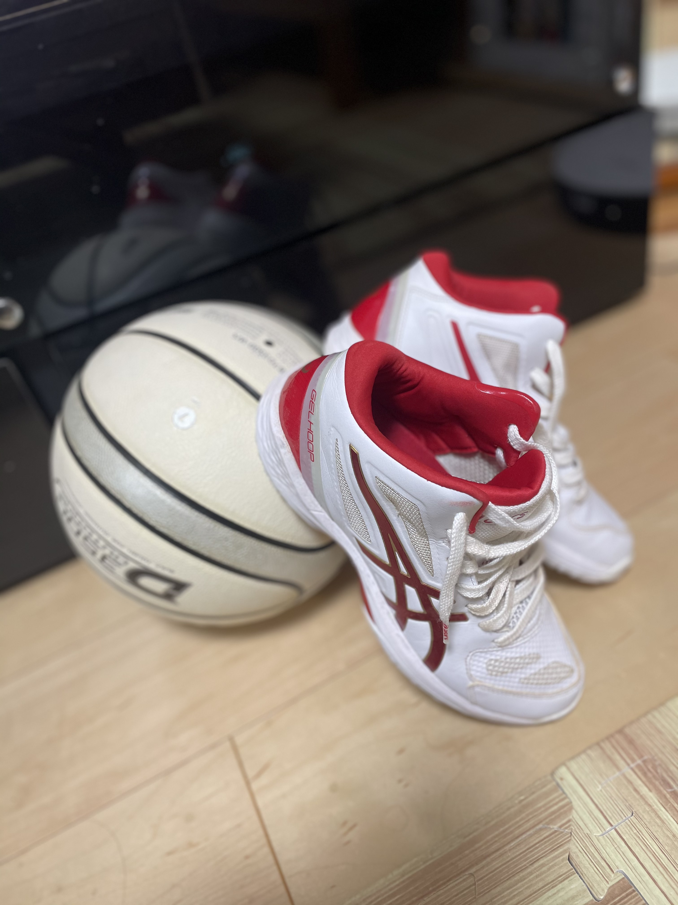

<!DOCTYPE html>
<html lang="ja">
    <head>
        <meta charset="UTF-8">
        <meta name="viewport" content="width=device-width,initial-scale=1">
        <link rel="stylesheet" href="css/hobby.css">
        <link rel="stylesheet" href="css/hobbys.css">
        <link rel="icon" type="image/x-icon" href="img/favicon4.ico">
    </head>
    <body>
       <section class="top">
           <div class="img" style="background-image: url(img/rogo3.jpg);">
            </div>
            <h1 class="pageTtl">
                <span style="opacity: 1;">
                    <span style="opacity: 1;">H</span>
                    <span style="opacity: 1;">O</span>
                    <span style="opacity: 1;">B</span>
                    <span style="opacity: 1;">B</span>
                    <span style="opacity: 1;">Y</span>
                </span>
            </h1>       
       </section>
      
       <section class="food-text" style="background-image: url(img/rogo3.jpg);">
        <p>
            "Favorite Food"
        </p>
       <div class="f">
        <div class="food">
           
           <ul class="first">
                <span>『丼丸』</span> 
            <li>わさびと醤油が刺身に染みわたる感じがよだれ級</li>
             <li>若者らしく一言でゆうなら『写真映え』</li>
             <li>やっぱりご飯は酢飯よりノーマル派です</li>
             <li>特にウニに対する愛が強い</li> 
           </ul>
        </div>
        <div class="foods">
            
            <ul class="second">
                <span>『辛部』</span>
                <li>広島といったら『辛部』</li>
                <li>辛さが苦手な人でも気軽に、そしてお腹も満たされる</li>
                <li>辛部通な人はついタレまで飲んでしまう程</li>
                <li>毎日でもいいなってゆうレベル！</li>
            </ul>
        </div>
       </div>
      </section>
      <section class="bike-text"  style="background-image: url(img/rogo3.jpg);">
          <p>
              "Fix Bike"
            </p>
        <div class="bikes">
          <div class="bike">
              
                    <p>
                    技用で遠出には適してませんが、さほど遠くない場所には凄く最適で、<br>速度も普通の自転車とは比べ物にならない代物です。<br>
                    車だと混んでしまって進まない事が多々ある中で、そんな事を気にせずに<br>風を感じながらいろんな場所にいけるって、
                    最高ですよね。一人で乗るのはもちろん、<br>友達と一緒に走る時なんかは特に最高です。良い運動にもなるため、<br>
                    凄くおすすめです。自分の中で車の時代は終わったと今は感じています。<br>
                    <span>『必見』</span><br>
                    午前中から乗って汗をかき、昼から焼肉なんか食べたりしたら2倍美味しく、<br>頬が落ちる級です。それとプラスしてレモンサワーは最高です！！！！
                    </p>
            </div>
        </div>
      </section>
      <section class="sport" style="background-image: url(img/rogo3.jpg);">
          <p>
              "Basket Ball"
          </p>
        <div class="basket">
          <div class="bask">
              
                <p>
                    スポーツと言ったら僕の中で『バスケット』。<br>テレビでよく見る、野球やサッカーみたいにそこまでメジャーでは
                    とは言えませんが、<br>僕も昔から（小学2-中学2）やっていたこともあり、やっぱり愛着が湧くって感じです。<br>
                    そんなバスケットの良さをまとめてみました。<br>
                <br>
                <br>
                
                    "1.シュートが綺麗に入った時の『スパッ』となる音"<br>
                    "2.体育館を走る時のシューズの音"<br>
                    "3.ブザービート（ピリオドが鳴ると同時に）シュートが入った時の盛り上がり"<br>
                    "4.練習してきた技などで相手を抜いた時"<br>
                <br>
                <br>
                
                    やっている人には他にも様々な良さがあると思います。もっともっとテレビ放送などで<br>アピールして世界の方々にバスケットの面白さを伝えて欲しいなと思っています。
                </p>
            </div>
        </div>
        </div>
      </section>
      <section class="fashion-text" style="background-image: url(img/rogo3.jpg);">
          <p>"Fashion"</p>
          <div class="co-de">
          <div class="one">
              
              <p>
                  秋をイメージしたコーデ。<br>昔嫌いだった茶色と緑。何故か昔嫌いだった物や色程、歳を取るにつれて好きになっていくのは僕だけでしょうか。。
              </p>
          </div>
          <div class="two">
              
              <p>
                  大好きなブランド『niko and...』。<br>唯一ワクワクしながら買い物ができる場所。
                  このグレーのシャツは、初めてこの店で買った一品です。割と大きめで、緩くオシャレな感じや、締めて成年っぽくも着れるのが好きです。
              </p>
          </div>
          <div class="three">
              
              <p>
                  ショッピング行くと、とりあえずUNIQLO。安いし意外とオシャレ。デザインはシンプルが多めですが、
                  その無印感がまた良い。ラフな感じで着れるのでよく愛用しています。
              </p>
              <a href="index.html">Home→</a>
          </div>
          </div>
      </section>


               

               
                
           

       
    </body>
</html>